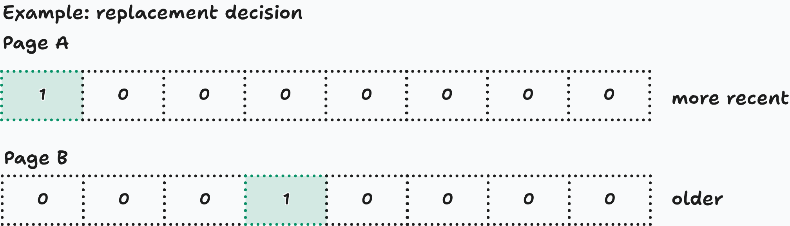

6 Advanced paging and virtual memory
Day 3 established how a virtual page number maps to a physical frame. Today adds three mechanisms:
- Hierarchical page tables organize large, mostly unused mapping tables.
- The TLB speeds up address translation.
- Demand paging and page replacement manage pages that are not all resident in RAM.
The strongest direct Day 4 evidence in the 2016 exam is the question about approximating last-access times using hardware reference bits. Multilevel tables, TLB calculations, and replacement traces are supported primarily by the assignments and the explicit study plan. The 2026 memory protocol confirms paging’s importance but does not explicitly report these advanced mechanisms.
Throughout this unit, memory is byte-addressable, page sizes are powers of two, and KiB/MiB use binary units.
1. Hierarchical page tables
Why divide a page table into levels?
A full flat page table contains one entry for every possible virtual page, including unused virtual regions.
For example, 32-bit virtual addresses and 4 KiB pages give:
\[ 2^{32-12}=2^{20} \]
entries. At four bytes per entry, that is 4 MiB per process, even if the process uses little memory.
A hierarchical table divides this mapping into smaller tables. The root contains references to tables at the next level; only the final level contains mappings to data frames.
Its main space advantage is:
Tables for unused virtual-address regions need not be allocated.
Hierarchy does not make a fully populated table smaller. When every possible mapping is represented, the leaf entries still exist, and the upper levels add overhead.
Address decomposition and translation
With \(v\)-bit virtual addresses, page size \(2^n\) bytes, and \(k\) table levels:
\[ \boxed{v=b_1+b_2+\cdots+b_k+n} \]
Here, \(b_i\) is the number of bits indexing level \(i\); the final \(n\) bits are the offset.
For three levels:
| Virtual-address field | Function |
|---|---|
| \(i_1\): \(b_1\) bits | Select an entry in the root table |
| \(i_2\): \(b_2\) bits | Select an entry in the chosen level-2 table |
| \(i_3\): \(b_3\) bits | Select an entry in the chosen leaf table |
| \(d\): \(n\) bits | Select a byte within the mapped data frame |
The translation proceeds as follows:
- The current process’s page-table root address identifies the root.
- Root entry \(i_1\) identifies the physical base address of a level-2 table.
- Entry \(i_2\) of that table identifies a leaf table.
- Leaf entry \(i_3\) contains the data-frame number \(f\), together with flags.
- Form the physical address:
\[ A=f\,2^n+d. \]
The offset remains unchanged. The table levels collectively translate the virtual page number.
If entries occupy \(E_i\) bytes, the selected entry at level \(i\) is located at:
\[ \text{table base}+i_iE_i. \]
Intermediate entries identify next-level tables; leaf entries identify data frames. Confusing those contents is a common mistake.
Counting tables and entries
An index with \(b_i\) bits selects among \(2^{b_i}\) entries in one table at that level.
For a fully populated three-level hierarchy:
| Level | Number of tables | Entries per table | Total entries at that level |
|---|---|---|---|
| 1 | \(1\) | \(2^{b_1}\) | \(2^{b_1}\) |
| 2 | \(2^{b_1}\) | \(2^{b_2}\) | \(2^{b_1+b_2}\) |
| 3 | \(2^{b_1+b_2}\) | \(2^{b_3}\) | \(2^{b_1+b_2+b_3}\) |
Thus, with \(E\) bytes per entry at every level:
\[ \boxed{ T_{\max} = E\left( 2^{b_1} + 2^{b_1+b_2} + 2^{b_1+b_2+b_3} \right) } \]
More generally:
\[ T_{\max} = \sum_{i=1}^{k}E_i\,2^{b_1+\cdots+b_i}. \]
This counts page-table storage only, excluding the process’s data pages.
Short worked example
Suppose a system has:
- 24-bit virtual addresses;
- 256-byte pages;
- two levels, each using eight index bits;
- four-byte entries.
The address split is:
\[ \underbrace{i_1}_{8} \mid \underbrace{i_2}_{8} \mid \underbrace{d}_{8}. \]
Each table has 256 entries and occupies:
\[ 256\cdot4=1\text{ KiB}. \]
The maximum hierarchy contains one root and 256 leaf tables:
\[ T_{\max}=257\text{ KiB}. \]
If the process uses pages in only two root-index regions, it needs one root and two leaf tables:
\[ T_{\text{allocated}}=3\text{ KiB}. \]
This assumes complete tables are allocated and ignores allocator overhead. Even if only one entry in a leaf table is used, the whole leaf table occupies 1 KiB.
Do not assume a table occupies exactly one page. That is a common design choice, but follows only when the specified entry count and entry size make it true.
2. The TLB: caching translations
A Translation Lookaside Buffer, or TLB, is a small, fast hardware cache of page translations.
Conceptually, an entry contains:
\[ (\text{address-space identity},\text{virtual page}) \longrightarrow (\text{physical frame},\text{permissions}). \]
It caches a translation, rather than the page’s data.
Hit and miss
For a permitted access:
| Event | What happens |
|---|---|
| TLB hit | Obtain the frame number from the TLB; access the data at \(fP+d\) |
| TLB miss, page resident | Walk the page table, obtain the mapping, refill the TLB, and complete the access |
| TLB miss, page nonresident | The page-table lookup detects absence; a page fault transfers control to the OS |
A TLB miss therefore does not imply a page fault.
A page-table walk may be performed by hardware or by software, depending on the architecture. For these exercises, the essential point is the extra translation work on a miss.
Why a small TLB helps
Programs exhibit:
- Temporal locality: recently accessed pages are often accessed again.
- Spatial locality: nearby addresses often lie within the same page.
For example, a page-aligned array of four-byte integers contains 1,024 integers per 4 KiB page. Sequentially reading those integers reuses one translation many times.
The TLB’s nominal coverage, sometimes called its reach, is:
\[ \text{TLB entries}\times\text{page size}. \]
A 64-entry TLB with 4 KiB pages can cache translations covering 256 KiB.
Coverage alone does not determine the miss rate. Access order, alignment, associativity, and replacement policy also matter. For a simplified fully associative LRU TLB, repeatedly cycling through more distinct pages than it can hold can produce a miss on every access.
Quantitative access time
The course explicitly includes this calculation.
Assume:
- \(k\) page-table levels;
- one RAM access per level on a miss;
- all pages and page tables are resident;
- no additional caches or overlapping accesses;
- TLB lookup time \(t_{\mathrm{TLB}}\);
- RAM access time \(t_{\mathrm{RAM}}\);
- TLB hit ratio \(h\);
- every access first performs a TLB lookup.
Then:
\[ t_{\text{hit}}=t_{\mathrm{TLB}}+t_{\mathrm{RAM}}, \]
\[ t_{\text{miss}}=t_{\mathrm{TLB}}+(k+1)t_{\mathrm{RAM}}. \]
The \(+1\) is the actual data access after the \(k\) table accesses.
Therefore:
\[ \boxed{ \operatorname{EAT} = h\,t_{\text{hit}}+(1-h)t_{\text{miss}} = t_{\mathrm{TLB}}+\left[1+k(1-h)\right]t_{\mathrm{RAM}} } \]
For two levels, \(t_{\mathrm{TLB}}=5\) ns, \(t_{\mathrm{RAM}}=80\) ns, and \(h=0.95\):
\[ \operatorname{EAT} = 5+[1+2(0.05)]80 = 93\text{ ns}. \]
Without a TLB, the simplified two-level translation plus data access costs \(3\cdot80=240\) ns.
Convention note: the supplied solutions omit TLB lookup time from the miss branch. That requires a different timing assumption or an approximation. State your model; with the sequential lookup model above, it belongs in both branches.
These formulas exclude page faults. Fetching a missing page can be much more expensive than a resident-page access.
Process and thread switches
The same virtual page number can map to different frames in different processes.
Without address-space tags, cached translations must be invalidated when switching address spaces. Otherwise, process B could use process A’s translation.
With address-space identifiers, translations from multiple address spaces can coexist safely if correctly tagged.
Switching between threads that share one address space does not by itself require a TLB flush.
3. Demand paging and page-fault handling
Paging provides address translation. Demand paging additionally allows a valid virtual page to be absent from RAM until needed.
A nonresident page may have contents in an executable file, another mapped file, or swap storage. A newly allocated page may instead be initialized with zeros. A page fault therefore does not always require reading an existing page from disk.
For today’s replacement exercises, a page fault means that the referenced page is absent from the available frames.
The basic sequence
When an access references a valid but nonresident page:
- The hardware detects the missing resident mapping and raises a page fault.
- The OS checks whether the access is valid and permitted.
- The OS obtains a frame:
- use a free frame if one is available;
- otherwise select a resident victim page.
- If necessary, preserve the victim’s modified contents.
- Load or initialize the requested page.
- Update page-table entries and invalidate stale cached translations.
- Restart the faulting instruction.
An invalid address or forbidden operation cannot be repaired simply by loading a page.
Page fault versus replacement
A page fault requires replacement only when no suitable free frame is available.
Consequently:
- Loading the first page into initially empty memory causes a page fault.
- It does not evict another page.
- Once all allocated frames are occupied, a fault requires a victim under the exercise’s fixed-frame model.
There are also two distinct kinds of eviction:
| Eviction | What is removed? |
|---|---|
| TLB-entry eviction | A cached translation |
| Page replacement | A resident page’s contents from its frame |
Removing a TLB entry leaves the page resident.
Reference and dirty bits
Hardware maintains flags associated with pages:
| Bit | Meaning | Set by |
|---|---|---|
| R / accessed bit | The page has been referenced since the bit was cleared | Hardware on access |
| M / dirty bit | The page has been modified since its contents were made clean | Hardware on write |
Reads and writes both count as references. A read alone does not make a page dirty.
The OS clears bits when appropriate. A dirty victim generally needs its modified contents preserved before its frame is reused. A clean page with an unchanged backing copy can usually be discarded without write-back.
4. FIFO, LRU, and Clock
All three policies select among resident pages when replacement is necessary.
FIFO: oldest arrival
First In, First Out replaces the page that entered memory earliest.
Maintain a queue from oldest to newest:
- Hit: leave the queue unchanged.
- Fault with free space: load the page and append it.
- Fault with full memory: remove the oldest page and append the new page.
A frequently accessed page can still be FIFO’s victim because hits do not renew its arrival time.
LRU: oldest last access
Least Recently Used replaces the page whose most recent access occurred furthest in the past.
For manual simulation, maintain an order from least to most recently used:
- Hit: move the referenced page to the most-recent end.
- Fault: load the page as most recently used.
- If memory is full, first remove the least-recent page.
Exact LRU needs recency information updated on every reference. Maintaining that precisely can be expensive; hardware bits support cheaper approximations.
One state illustrating the difference
Suppose three frames receive:
\[ A,\ B,\ C,\ A. \]
All three pages are resident.
- FIFO order: \(A,B,C\). Its next victim is A.
- LRU order: \(B,C,A\). Its next victim is B.
FIFO asks “Who arrived first?” LRU asks “Who was used least recently?”
Clock / Second Chance
Clock implements a second-chance policy using:
- frames arranged in a circular order;
- one reference bit per resident page;
- a hand pointing to the next candidate.
Use this explicit convention:
- Every completed reference sets the page’s \(R=1\), including the reference that loads it.
- Hits do not move the hand.
- On replacement:
- if the candidate has \(R=0\), replace it;
- if it has \(R=1\), clear the bit and advance;
- repeat until a victim is found.
- Load the new page with \(R=1\), then advance the hand to the next frame.
Queue-based Second Chance applies the same idea by moving an oldest page with \(R=1\) to the back after clearing its bit. Clock represents that rotation with a circular hand.
Initialization conventions can change a trace. Some teaching examples initialize newly loaded pages differently. Always follow the stated convention.
Why Clock differs from exact LRU
After \(A,B,C,A\), suppose all bits are 1 and the hand points to A.
On a fault for D, Clock:
- Clears A’s bit.
- Clears B’s bit.
- Clears C’s bit.
- Returns to A, now with \(R=0\), and replaces it.
Exact LRU would replace B.
Clock knows that all three pages were referenced since their bits were cleared. It does not know the exact ordering of those references.
Reliable manual tracing
For each reference:
- Check whether the page is already resident.
- Mark hit or fault.
- On a fault, fill a free frame or select a victim.
- Update the policy’s metadata.
- Record the complete state after the reference.
Keep physical frame positions fixed in your table. Record FIFO/LRU order separately; changing recency order does not move page contents between frames.
| Policy | Metadata you must update |
|---|---|
| FIFO | Arrival queue; unchanged on hits |
| LRU | Recency order; updated on every reference |
| Clock | R bits and hand position |
FIFO can exhibit Belady’s anomaly: adding frames can increase faults for some reference strings. Exact LRU does not have this anomaly. Neither FIFO nor LRU wins on every individual reference string.
5. Approximating recency with R bits
An R bit answers:
Has this page been referenced at least once since the bit was last cleared?
It does not record:
- how many references occurred;
- their exact times;
- their ordering relative to references to other pages.
Periodic sampling
Divide time into epochs. At each epoch boundary, the OS conceptually performs:
for each page-table entry being monitored:
if entry.R == 1:
entry.last_observed_epoch = current_epoch
entry.R = 0During the next epoch, hardware sets the bit again if the page is accessed.
A page with an older last_observed_epoch has not been observed in use for longer and is a plausible victim.
However, two pages accessed in the same epoch receive the same approximate timestamp, even if one was accessed at its beginning and the other immediately before the scan.
This is LRU-like approximation, not exact LRU.
Real implementations must ensure that clearing the bit makes subsequent accesses observable despite cached translations. For exam purposes, assume the required synchronization and invalidation are included in the stated operation cost.
Sampling versus Clock
Both use hardware reference bits, but differently:
| Mechanism | When are bits inspected and cleared? |
|---|---|
| Periodic epoch sampling | At regular time intervals |
| Basic Clock | While searching for a victim |
Clock’s hand position and previous scans influence its information. Its bits do not necessarily describe one common sampling interval.
R-bit scanning overhead
The Sheet 6 A4 model scans full flat page tables.
Let:
- \(m\): number of processes;
- \(v\): virtual-address width;
- \(2^n\): page size;
- \(c\): cycles to sample and clear one entry;
- \(f_{\mathrm{CPU}}\): CPU cycles per second.
Then:
\[ N_{\text{scan}}=m\,2^{v-n}, \]
\[ C_{\text{scan}}=c\,m\,2^{v-n}, \]
\[ \boxed{ t_{\text{scan}} = \frac{c\,m\,2^{v-n}}{f_{\mathrm{CPU}}} } \]
This counts entries in the stipulated tables. It does not require every virtual page to be resident or even allocated.
For the original sheet’s parameters:
\[ t_{\text{scan}} = \frac{10\cdot20\cdot2^{20}}{10^9} \approx0.2097\text{ s}. \]
If scans start every \(T\) seconds, including scanning time within that interval, their CPU-time fraction is:
\[ \boxed{\alpha=\frac{t_{\text{scan}}}{T}}. \]
To stay at or below a budget \(\alpha_{\max}\):
\[ \boxed{T\ge\frac{t_{\text{scan}}}{\alpha_{\max}}}. \]
For a 10% budget, the original parameters require at least about 2.10 seconds, rather than exactly 2 seconds.
The tradeoff is:
- Short epochs: finer recency information, more scanning overhead.
- Long epochs: less overhead, more references grouped into indistinguishable intervals.
There is no universally correct epoch length. Derive it from the stated budget and explain the loss of precision.
Common exam traps
- Counting one table instead of a whole level: distinguish entries per table, tables per level, and total entries per level.
- Claiming hierarchy always saves memory: sparse allocation saves memory; a fully populated hierarchy adds upper-level overhead.
- Confusing intermediate pointers with data-frame numbers.
- Equating a TLB miss with a page fault, or a page fault with an eviction.
- Forgetting the final data access in TLB timing calculations.
- Updating FIFO on hits, or failing to update LRU on hits.
- Tracing Clock without specifying the hand and R-bit conventions.
- Treating R bits as exact timestamps: they record occurrence within an interval, not access order.
- Scanning physical frames when the problem specifies full per-process flat tables, or mixing CPU cycles with seconds.
Exam-like exercises
Allow approximately 55–70 minutes. Show intermediate states and short explanations. Solutions are intentionally omitted so you can work through these first.
Exercise 1 — A sparse three-level address space
A machine uses:
- 30-bit virtual byte addresses;
- 1 KiB pages;
- three page-table levels with index widths 6, 7, and 7 bits, from root to leaf;
- four-byte entries at every level.
Intermediate entries contain physical base addresses of next-level tables. Leaf entries contain data-frame numbers and flags. Complete tables are allocated; ignore alignment padding and other metadata.
A. Structure and translation
- Give the address decomposition, including the bit positions of all fields.
- Determine entries per table and bytes per table at each level.
- A virtual address has fields:
\[ i_1=5,\quad i_2=9,\quad i_3=17,\quad d=37. \]
The root is based at physical address 0x4000.
- Root entry 5 contains next-table base
0x8000. - Entry 9 of that table contains leaf-table base
0xA000. - Leaf entry 17 maps to frame 73 and permits the access.
Calculate:
- the virtual byte address;
- the physical address of each of the three selected entries;
- the resulting physical data address.
B. Full versus sparse allocation
- For a fully populated hierarchy, calculate:
- the number of tables at each level;
- the total entries at each level;
- the total page-table memory.
- Compare this with a full flat table using four-byte entries. Explain the difference.
The process actually has allocated virtual pages only at these index triples:
\[ (0,0,0),\quad(0,0,127),\quad(0,3,2),\quad(63,127,127). \]
- Determine the number of allocated tables at each level and the total table memory.
- The process additionally allocates page \((0,3,3)\). Does this require another page-table allocation? What about allocating \((0,4,0)\)? Explain.
Exercise 2 — Translation misses and missing pages
A system uses two-level page tables and 4 KiB pages.
For process P:
| Virtual page | Page-table state |
|---|---|
| 0 | Resident in frame 8, readable |
| 1 | Resident in frame 3, readable |
| 2 | Valid and readable, but nonresident |
Initially:
- P’s TLB contains only page \(0\rightarrow8\).
- The TLB can hold all translations used in this exercise.
- One free data frame, frame 6, is available.
- Page-table pages are resident.
- The OS loads page 2 into frame 6 when necessary.
A. Trace the mechanisms
P performs these reads in order:
\[ 0x0020,\quad0x1040,\quad0x1080,\quad0x2008,\quad0x200C. \]
- For each read, give:
- virtual page and offset;
- whether the initial TLB lookup hits or misses;
- whether a page-table walk occurs;
- whether a page fault occurs;
- whether a resident data page is evicted;
- the physical address after successful completion.
- Give the total initial TLB misses, page faults, and data-page evictions.
B. Timing and capacity
Assume a sequential TLB lookup model with:
\[ t_{\mathrm{TLB}}=8\text{ ns},\qquad t_{\mathrm{RAM}}=70\text{ ns},\qquad h=0.90. \]
- Calculate hit time, resident-page miss time, and expected access time. Exclude page faults.
- A separate workload repeatedly reads one byte from pages:
\[ 4,5,6,7,4,5,6,7,\ldots \]
All four pages remain resident. Its initially empty TLB is fully associative, holds three translations, and uses exact LRU. Determine the hit/miss behavior and explain whether it implies page faults.
C. Address-space identity
- Process Q maps its page 0 to frame 12. Explain what could go wrong if an untagged TLB retains P’s page-0 translation when switching to Q.
- Does switching between two threads of P create the same problem? Explain.
Exercise 3 — Complete FIFO, LRU, and Clock traces
A process has three initially empty frames, numbered 0, 1, and 2. All referenced pages are valid. The reference string is:
\[ A,\ B,\ C,\ A,\ D,\ B,\ E,\ A,\ B,\ C,\ D,\ E. \]
A. FIFO and exact LRU
- Simulate FIFO and exact LRU separately.
- After every reference, record:
- all three frame contents;
- hit or fault;
- victim, if any;
- FIFO queue or LRU order.
- Count page faults and evictions for each policy.
- Identify the first reference at which their victim choices differ. Explain using their metadata.
B. Clock
Use these conventions:
- The hand initially points to frame 0.
- Empty frames are filled at the hand, then the hand advances.
- Every loaded or referenced page has \(R=1\).
- Hits leave the hand unchanged.
- During replacement, clear and pass over candidates with \(R=1\).
- Replace the first candidate with \(R=0\), set the new page’s bit to 1, and advance the hand.
- Simulate Clock for the same complete string.
- After each reference, record:
- frame contents and R bits;
- the hand position;
- hit/fault and victim.
- At the first replacement, list every frame inspected, including repeated inspections. Compare Clock’s victim with exact LRU’s.
- Explain why Clock can evict a page whose last access was more recent than another resident page’s last access.
You may use this table layout separately for each policy:
| Step | Reference | Frame 0 | Frame 1 | Frame 2 | Hit/fault | Victim | Policy metadata |
|---|
Exercise 4 — R-bit evidence and its cost
A. What can sampling reveal?
Four resident pages A, B, C, and D initially have:
\[ R=0,\qquad\text{last observed epoch}=0. \]
At the end of each epoch, the OS updates the approximate timestamp of every page with \(R=1\), then clears all R bits.
The references are:
| Epoch | References in chronological order |
|---|---|
| 1 | A, B, A |
| 2 | C, B |
| 3 | A, C |
- Give every page’s R bit immediately before each scan and its approximate timestamp immediately after each scan.
- After epoch 3’s scan, which page would an “oldest observed epoch” policy select first?
- Suppose D has already been removed and another victim must immediately be selected among A, B, and C. Which page does exact LRU choose? Which page does the epoch approximation choose?
- The OS then needs to distinguish A from C. Can their epoch timestamps establish their exact LRU order? State the actual order from the reference history and explain what sampling lost.
- Does accessing A ten times during epoch 3 give its R bit a different value from accessing it once?
B. Scanning overhead
A different system has:
- 32-bit virtual addresses;
- 8 KiB pages;
- 12 processes, each with a full flat page table;
- a 2 GHz CPU;
- 16 CPU cycles to read, record, and clear one entry’s R bit.
Assume a single CPU executes the scans sequentially. One scan occurs per epoch.
- Calculate:
- entries scanned per process;
- total entries;
- cycles per scan;
- scan time in milliseconds.
- The scan must consume at most 4% of CPU time. Calculate the minimum epoch duration, measured from the start of one scan to the start of the next.
- What fraction of CPU time would scanning consume with 100 ms epochs?
- Explain why increasing the epoch duration solves the overhead problem while reducing recency precision.
- Only a small fraction of virtual pages are resident. Does that reduce the cost under the specified full-table scanning model? What would have to change in the scanning method to exploit sparse residency?
The unit follows the plan and prerequisite chapter in 15-Operating-Systems-and-Networks-SoSe-25-Notes.pdf, the mechanisms and calculations in 05-ueb05-ibn-SS2025.pdf and 06-ueb06-ibn-SS2025.pdf, checked against 14-Operating-Systems-and-Networs-SoSe-25-Solutions.pdf and the theoretical framing in 01-ibn-zusammenfassung.pdf. Exam calibration uses 12-ibn-klausur-2016.pdf and 13-Ged-chtnisprotokoll_Klausur_-IBN_Ersttermin.pdf.
Solutions
Exercise 1 — A sparse three-level address space
A. Structure and translation
1–2. Address fields and table sizes
A 1 KiB page contains \(2^{10}\) bytes, so the offset uses 10 bits.
\[ \boxed{i_1:6\text{ bits}\mid i_2:7\text{ bits}\mid i_3:7\text{ bits}\mid d:10\text{ bits}} \]
| Field | Bit positions |
|---|---|
| \(i_1\) | 29–24 |
| \(i_2\) | 23–17 |
| \(i_3\) | 16–10 |
| Offset \(d\) | 9–0 |
At four bytes per entry:
| Level | Entries in one table | Bytes in one table |
|---|---|---|
| 1 | \(2^6=64\) | \(64\cdot4=256\) |
| 2 | \(2^7=128\) | \(128\cdot4=512\) |
| 3 | \(2^7=128\) | \(128\cdot4=512\) |
These tables need not occupy whole page frames under this exercise’s assumptions.
3. Translation
The virtual address is:
\[ \begin{aligned} V &=5\cdot2^{24}+9\cdot2^{17}+17\cdot2^{10}+37\\ &=\boxed{85\,083\,173}. \end{aligned} \]
Each selected entry is at its table’s base plus the index multiplied by four:
| Selected entry | Physical address of entry | Entry content |
|---|---|---|
| Root entry 5 | 0x4000 + 5·4 = 0x4014 |
Next table at 0x8000 |
| Level-2 entry 9 | 0x8000 + 9·4 = 0x8024 |
Leaf table at 0xA000 |
| Leaf entry 17 | 0xA000 + 17·4 = 0xA044 |
Data frame 73 |
The physical data address is:
\[ A=73\cdot1024+37=\boxed{74\,789}. \]
Check: the addresses of the table entries are intermediate lookup locations; none is the final data address.
B. Full versus sparse allocation
4. Fully populated hierarchy
| Level | Number of tables | Entries per table | Total entries | Total bytes |
|---|---|---|---|---|
| 1 | \(1\) | \(64\) | \(64\) | \(256\) |
| 2 | \(64\) | \(128\) | \(8\,192\) | \(32\,768\) |
| 3 | \(8\,192\) | \(128\) | \(1\,048\,576\) | \(4\,194\,304\) |
Therefore:
\[ T_{\max}=256+32\,768+4\,194\,304 =\boxed{4\,227\,328\text{ bytes}}. \]
Equivalently:
\[ \boxed{4\text{ MiB}+32\text{ KiB}+256\text{ bytes}}. \]
5. Flat-table comparison
There are:
\[ 2^{30-10}=2^{20} \]
virtual pages. A full flat table occupies:
\[ 2^{20}\cdot4=\boxed{4\text{ MiB}}. \]
The fully populated hierarchy uses 32 KiB + 256 bytes more, because it contains the same number of leaf entries plus the upper-level entries.
Its advantage appears when unused branches are not allocated.
6. Sparse allocation
The mapped triples are:
\[ (0,0,0),\quad(0,0,127),\quad(0,3,2),\quad(63,127,127). \]
Count distinct prefixes:
- One root.
- Two distinct first indices, \(0\) and \(63\): two level-2 tables.
- Three distinct pairs, \((0,0),(0,3),(63,127)\): three leaf tables.
Thus:
\[ T=256+2\cdot512+3\cdot512 =\boxed{2\,816\text{ bytes}=2.75\text{ KiB}}. \]
The first two mappings share a leaf table.
7. Additional mappings
| New page | New table allocation? | Reason |
|---|---|---|
| \((0,3,3)\) | No | Leaf table for \((0,3)\) already exists |
| \((0,4,0)\) | One new leaf table: 512 bytes | Level-2 table for \(i_1=0\) exists, but its branch \(i_2=4\) needs a leaf |
Allocating a data page also requires a data frame when made resident, but that is separate from the table-storage question.
Exercise 2 — Translation misses and missing pages
A. Trace the mechanisms
The page size is 0x1000 bytes.
| Read | Page | Offset | Initial TLB | Table walk? | Page fault? | Data-page eviction? | Final physical address |
|---|---|---|---|---|---|---|---|
0x0020 |
0 | 0x020 |
Hit | No | No | No | 0x8020 = 32,800 |
0x1040 |
1 | 0x040 |
Miss | Yes | No | No | 0x3040 = 12,352 |
0x1080 |
1 | 0x080 |
Hit | No | No | No | 0x3080 = 12,416 |
0x2008 |
2 | 0x008 |
Miss | Yes | Yes | No | 0x6008 = 24,584 |
0x200C |
2 | 0x00C |
Hit | No | No | No | 0x600C = 24,588 |
After the access to page 1, its translation is cached. Page 2 is loaded into the free frame 6, and its translation is made available for subsequent accesses.
Totals:
\[ \boxed{2\text{ initial TLB misses},\quad1\text{ page fault},\quad0\text{ evictions}}. \]
The fault does not require eviction because a free frame exists.
B. Timing and capacity
3. Access times
With two levels:
\[ t_{\text{hit}}=8+70=\boxed{78\text{ ns}}, \]
\[ t_{\text{miss}}=8+3\cdot70=\boxed{218\text{ ns}}. \]
The miss needs two table accesses and one data access.
\[ \operatorname{EAT} =0.9\cdot78+0.1\cdot218 =\boxed{92\text{ ns}}. \]
4. Four pages cycling through a three-entry LRU TLB
Reference sequence:
\[ 4,5,6,7,4,5,6,7,\ldots \]
Every access misses.
After loading translations for 4, 5, and 6, accessing 7 evicts 4. The next access to 4 evicts 5, and so on. Each page is removed before its next reference.
Nevertheless:
\[ \boxed{\text{No page faults and no data-page replacement.}} \]
All data pages remain resident; only their cached translations are evicted.
C. Address-space identity
5. Switching to Q
An untagged cached entry for page 0 still says:
\[ 0\rightarrow8. \]
Q’s correct mapping is:
\[ 0\rightarrow12. \]
If the old entry remains usable, Q could access frame 8 instead of frame 12, accessing the wrong process’s memory.
The OS must invalidate the relevant untagged translations when changing address spaces, or use correctly managed address-space tags.
6. Switching between P’s threads
Threads sharing P’s address space use the same page mappings. Switching between them does not itself require invalidating those mappings.
Exercise 3 — Complete replacement traces
In all tables:
- States are recorded after the reference.
—denotes an empty frame or no victim.- F = page fault; H = hit.
- Frame positions stay fixed.
A. FIFO
Queue order is oldest arrival → newest arrival.
| Step | Ref. | Frame 0 | Frame 1 | Frame 2 | F/H | Victim | FIFO queue |
|---|---|---|---|---|---|---|---|
| 1 | A | A | — | — | F | — | A |
| 2 | B | A | B | — | F | — | A, B |
| 3 | C | A | B | C | F | — | A, B, C |
| 4 | A | A | B | C | H | — | A, B, C |
| 5 | D | D | B | C | F | A | B, C, D |
| 6 | B | D | B | C | H | — | B, C, D |
| 7 | E | D | E | C | F | B | C, D, E |
| 8 | A | D | E | A | F | C | D, E, A |
| 9 | B | B | E | A | F | D | E, A, B |
| 10 | C | B | C | A | F | E | A, B, C |
| 11 | D | B | C | D | F | A | B, C, D |
| 12 | E | E | C | D | F | B | C, D, E |
\[ \boxed{\text{FIFO: }10\text{ faults},\quad7\text{ evictions}}. \]
Hits at steps 4 and 6 leave the arrival queue unchanged.
Exact LRU
Order is least recently used → most recently used.
| Step | Ref. | Frame 0 | Frame 1 | Frame 2 | F/H | Victim | LRU order |
|---|---|---|---|---|---|---|---|
| 1 | A | A | — | — | F | — | A |
| 2 | B | A | B | — | F | — | A, B |
| 3 | C | A | B | C | F | — | A, B, C |
| 4 | A | A | B | C | H | — | B, C, A |
| 5 | D | A | D | C | F | B | C, A, D |
| 6 | B | A | D | B | F | C | A, D, B |
| 7 | E | E | D | B | F | A | D, B, E |
| 8 | A | E | A | B | F | D | B, E, A |
| 9 | B | E | A | B | H | — | E, A, B |
| 10 | C | C | A | B | F | E | A, B, C |
| 11 | D | C | D | B | F | A | B, C, D |
| 12 | E | C | D | E | F | B | C, D, E |
\[ \boxed{\text{LRU: }10\text{ faults},\quad7\text{ evictions}}. \]
The first different victim choice is step 5:
- FIFO evicts A, the oldest arrival.
- LRU evicts B, because A was referenced again at step 4.
Both algorithms happen to have equal total faults here, despite different victims and different hit locations.
B. Clock
Notation A/1 means page A with reference bit 1. The hand column gives the next candidate frame after completing the reference.
| Step | Ref. | Frame 0 | Frame 1 | Frame 2 | F/H | Victim | Hand |
|---|---|---|---|---|---|---|---|
| 1 | A | A/1 | — | — | F | — | 1 |
| 2 | B | A/1 | B/1 | — | F | — | 2 |
| 3 | C | A/1 | B/1 | C/1 | F | — | 0 |
| 4 | A | A/1 | B/1 | C/1 | H | — | 0 |
| 5 | D | D/1 | B/0 | C/0 | F | A | 1 |
| 6 | B | D/1 | B/1 | C/0 | H | — | 1 |
| 7 | E | D/1 | B/0 | E/1 | F | C | 0 |
| 8 | A | D/0 | A/1 | E/1 | F | B | 2 |
| 9 | B | B/1 | A/1 | E/0 | F | D | 1 |
| 10 | C | B/1 | A/0 | C/1 | F | E | 0 |
| 11 | D | B/0 | D/1 | C/1 | F | A | 2 |
| 12 | E | E/1 | D/1 | C/0 | F | B | 1 |
\[ \boxed{\text{Clock: }10\text{ faults},\quad7\text{ evictions}}. \]
For checking your hand movements, replacement scans inspect these frame sequences:
| Step | Frames inspected, in order |
|---|---|
| 5 | 0, 1, 2, 0 |
| 7 | 1, 2 |
| 8 | 0, 1 |
| 9 | 2, 0 |
| 10 | 1, 2 |
| 11 | 0, 1 |
| 12 | 2, 0 |
First replacement: step 5
Before D:
- Frames contain A, B, C.
- All bits are 1.
- Hand points to frame 0.
Clock:
- Inspects A in frame 0: clears \(R=1\) to 0.
- Inspects B in frame 1: clears its bit.
- Inspects C in frame 2: clears its bit.
- Returns to A in frame 0: its bit is now 0, so replaces A.
Exact LRU replaces B instead.
Why Clock can evict a more recently used page
A was last accessed at step 4; B at step 2. Nevertheless, Clock evicts A.
The bits tell Clock that all three pages were referenced since their bits were cleared. They do not encode the order of those references. The hand breaks that ambiguity according to its circular scanning position.
Exercise 4 — R-bit evidence and scanning cost
A. Sampling
In the table below, each tuple lists values in order A, B, C, D.
| Epoch | References | R bits immediately before scan | Approximate timestamps after scan |
|---|---|---|---|
| Initially | — | \((0,0,0,0)\) | \((0,0,0,0)\) |
| 1 | A, B, A | \((1,1,0,0)\) | \((1,1,0,0)\) |
| 2 | C, B | \((0,1,1,0)\) | \((1,2,2,0)\) |
| 3 | A, C | \((1,0,1,0)\) | \((3,2,3,0)\) |
After every scan, all R bits are cleared to zero. The timestamps remain stored separately.
2. First victim
D has the oldest timestamp:
\[ \boxed{D}. \]
It was never referenced during these epochs.
3. After D has been removed
Among A, B, and C, timestamps are:
\[ A:3,\qquad B:2,\qquad C:3. \]
The approximation chooses B.
Exact LRU also chooses B: its last reference was in epoch 2, while both A and C were referenced in epoch 3.
4. Distinguishing A from C
Their approximate timestamps are tied at 3, so the sampling information cannot establish their exact order.
The actual history ends with A, then C. Therefore:
\[ \boxed{\text{A is less recently used than C.}} \]
Sampling loses the ordering of accesses within an epoch.
5. Ten accesses versus one
Both produce:
\[ \boxed{R_A=1}. \]
A single bit records whether at least one reference occurred, not the number of references.
B. Scanning overhead
6. Entries, cycles, and time
An 8 KiB page uses \(13\) offset bits. Thus, per process:
\[ N_{\text{process}}=2^{32-13} =\boxed{2^{19}=524\,288\text{ entries}}. \]
Across 12 processes:
\[ N_{\text{total}} =12\cdot524\,288 =\boxed{6\,291\,456\text{ entries}}. \]
At 16 cycles per entry:
\[ C=6\,291\,456\cdot16 =\boxed{100\,663\,296\text{ cycles}}. \]
At 2 GHz:
\[ t_{\text{scan}} =\frac{100\,663\,296}{2\cdot10^9} =0.050331648\text{ s}. \]
\[ \boxed{t_{\text{scan}}\approx50.33\text{ ms}}. \]
7. Maximum 4% overhead
The epoch duration includes the scan:
\[ \frac{t_{\text{scan}}}{T}\le0.04. \]
Therefore:
\[ T\ge\frac{0.050331648}{0.04} =\boxed{1.2582912\text{ s}}. \]
A practical rounded choice is 1.26 seconds or longer.
8. With 100 ms epochs
\[ \alpha =\frac{50.331648\text{ ms}}{100\text{ ms}} =0.50331648. \]
\[ \boxed{\text{Scanning consumes approximately }50.33\%\text{ of CPU time}.} \]
9. Longer epochs
Increasing \(T\) reduces the overhead fraction \(t_{\text{scan}}/T\).
However, accesses over a longer interval receive the same epoch timestamp. The approximation therefore loses more information about which page was accessed most recently.
10. Sparse residency
No reduction under the specified model. It scans every entry of every full flat table, regardless of residency.
To exploit sparse residency, the scanner would need to visit only relevant entries—for example, by maintaining a collection of resident-page mappings rather than scanning the full virtual-page range.
For a quick comparison, your main numerical checkpoints are:
| Exercise | Key results |
|---|---|
| 1 | Maximum hierarchy 4,227,328 B; sparse hierarchy 2,816 B; physical data address 74,789 |
| 2 | 2 initial TLB misses; 1 fault; 0 evictions; EAT 92 ns |
| 3 | FIFO, LRU, Clock each have 10 faults and 7 evictions, with different traces |
| 4 | Scan 50.33 ms; minimum epoch 1.2583 s; 100 ms epochs incur 50.33% overhead |
Supplementary Matrial
I agree with your suggestion to keep the detailed implementation relatively low priority for now. However, after checking the uploaded materials, epoch-based LRU approximation is actually more exam-relevant than you suspected.
The IBN summary explicitly describes storing the last 8, 16, or 32 observations of each page’s R bit. Moreover, the 2016 exam (Aufgabe 2.5, 4 points) asks how hardware R bits can be used to approximate the last access time. Übungsblatt 6, Aufgabe 4 asks about scanning overhead and choosing an epoch length.
ibn-zusammenfassung.pdf
ibn-klausur-2016.pdf
Our previous assignment-sheet analysis also classified these calculations as high priority. So I wouldn’t interpret the omission as a deliberate decision that the mechanism is unimportant. A concise explanation should have been included.
1. How epochs and shifting registers work
An epoch (Epoche) is simply a fixed time interval, for example 100 ms.
For each relevant page, the OS maintains:
- The hardware-maintained R bit.
- A software-maintained history register, say 8 bits long.
At the end of each epoch, the OS performs three operations:
- Read the current R bit.
- Shift the history register one position to the right, inserting R as the leftmost bit.
- Clear R for the next epoch.
In pseudocode:
for each resident page p:
history[p] = (history[p] >> 1) | (R[p] << 7)
R[p] = 0Here history[p] is an 8-bit value, and >> and << are bit shifts.
Concrete example
Suppose page A is accessed during epochs 1 and 3, but not during epochs 2 and 4.
| Epoch | R observed | History after update |
|---|---|---|
| Initially | — | 00000000 |
| 1 | 1 | 10000000 |
| 2 | 0 | 01000000 |
| 3 | 1 | 10100000 |
| 4 | 0 | 01010000 |
The leftmost bit represents the most recent epoch; older observations move to the right.
Compare two pages:

The aging algorithm treats these bit histories as unsigned integers and preferentially evicts the page with the smallest value.
In this case, B is selected.
This approximates LRU because an older reference contributes a smaller value than a recent one. It is not exact LRU: the history also reflects how many epochs contained references, and accesses within an epoch cannot be ordered.
2. Where is the history stored?
Normally, the history register is maintained by the operating system in software, not by the MMU in a dedicated hardware field.
It is useful to distinguish:
| Information | Typical storage | Maintained by |
|---|---|---|
| R bit | Page-table entry | CPU hardware; OS can clear |
| M bit | Page-table entry | CPU hardware; OS manages as needed |
| 8/16/32-bit history | Kernel-managed page metadata | Operating system |
The history could be stored in an auxiliary array indexed by virtual page, or in metadata associated with resident physical pages.
Some architectures offer software-available PTE bits, but a conventional hardware-defined PTE does not provide a dedicated 8-, 16-, or 32-bit aging register.
One interesting correction to the IBN summary: it suggests an inverted page table is necessary to examine the pages of all processes. That is not generally required. The OS can scan conventional page tables belonging to different processes or maintain separate metadata structures. In fact, Übungsblatt 6, Aufgabe 4 explicitly assumes direct page tables, one per process.
ueb06-ibn-SS2025.pdf
3. How important is this for the exam?
I would distinguish the following levels of preparation.
| Knowledge | Priority |
|---|---|
| Explain that the CPU sets R on access | Very high |
| Explain periodic sampling and clearing of R | High |
| Explain storing several epochs of R-bit history | High |
| Calculate scanning overhead and reason about epoch length | High |
| Simulate a few history-register updates | Medium |
| Know kernel data structures and exact implementation details | Low |
The trade-off for epoch length is also worth remembering:
- Short epochs: Better time resolution, but more frequent scanning and therefore higher overhead.
- Long epochs: Lower scanning overhead, but less precise information about recent accesses.
My recommendation
Spend enough time to understand the shifting-history mechanism and be able to explain it in 3–4 sentences. You now have sufficient background for that.
Then continue with the main Day 4 material. The detailed implementation of aging counters, page metadata, and reverse mappings can wait until after the core preparation plan.
One especially useful connection: The 2016 exam’s question about approximating last-access time can be answered directly with the R-bit sampling and history mechanism above. So this is one of those small details worth retaining, even under time pressure.